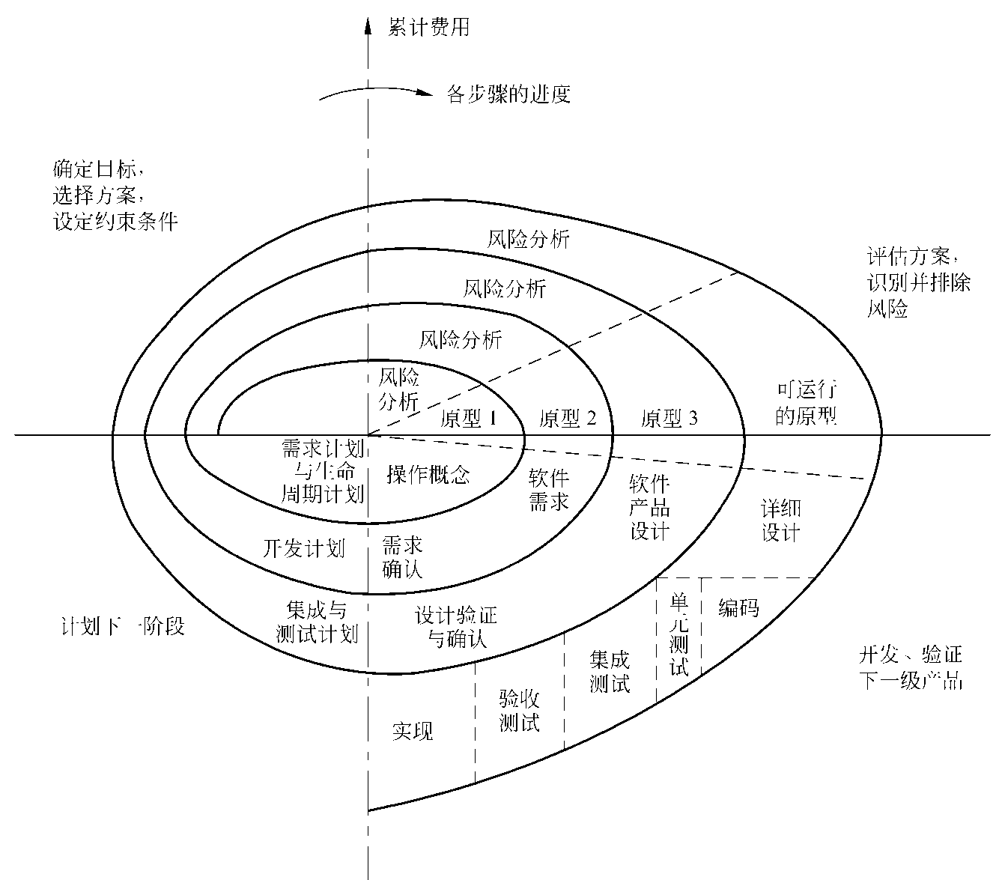
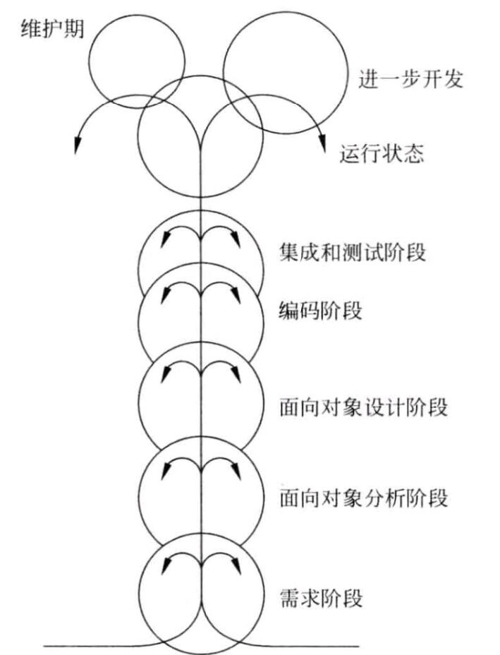
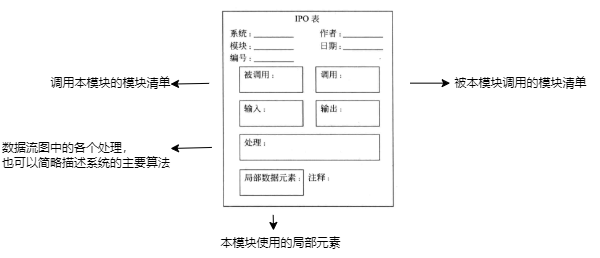

软件工程导论
一. 软件危机
- 定义：软件危机是指在计算机软件的开发和维护过程中所遇到的一系列严重问题。
表现：
（1）开发成本和进度的估计不准确；（开发滞后）
（2）用户对开发的软件不满意；
（3）软件的质量靠不住；
（4）软件不可维护；（重复开发相同的软件）
（5）软件不可维护；（重复开发相同的软件）
（6）软件开发成本在计算机系统总成本中所占的比例逐年上升；
（7）软件开发生产率跟不上计算机应用的发展；（供不应求）
等等。 - 产生原因：
（1）软件本身的特点有关；（软件本身）
（2）软件开发与维护的方法不正确；（软件开发不匹配计算机发展）
（3）对用户要求没有完整准确的认识就匆忙着手编写程序；（开发人员） - 消除方法：
（1）对计算机软件有一个正确的认识；（消除软件就是程序的错误）
软件定义：软件是程序，数据及相关文档的完整集合；
（2）软件开发不是某个体劳动的神秘技巧，而是一种团队配合的工程项目，必须吸收和借鉴人类长期以来积累的原理、概念、技术和方法，尤其是教训；
（3）推广实践中总结出来的经验、技术和方法，并研究新的；
（4）开发和使用更好的软件工具。 - 总结：技术措施（方法、工具），必要的组织管理措施。
二. 软件工程
定义：指导计算机软件开发和维护的一门工程学科。
本质特征：
（1）关注于大型程序的构造；
（2）中心课题是控制复杂性；
（3）软件的效率非常重要；
（4）开发软件的效率非常重要；
（5）和谐地合作是开发软件的关键；
（6）软件必须有效地支持它的用户；
（7）一种文化背景的人替另一种文化背景的人创造产品；基本原理：
（1）用分阶段的生命周期计划严格管理；
（2）坚持进行阶段评审；
（3）实行严格的产品控制；
（4）采用现代化程序设计技术；
（5）结果应清除审查；
（6）开发小组的人员少二精；
（7）承认不断改进软件工程实践的必要性；软件工程方法学：
（1） 软件工程包含技术和管理两方面的内容：
（2） 范型（方法学）：在软件生命周期全过程中使用的一整套技术方法的集合；
包含三个要素： 方法、工具、过程；
常用——>传统方法学和面向对象方法学
（3）传统方法学（生命周期方法学 / 结构化范型）（大部分采用瀑布模型）
面向行为或数据，两者权重不同；（行为和数据分离）
🟪->🟪->🟪->🟪（一个阶段一个阶段地顺序开发）优点：软件生命周期划分为若干个阶段，每个阶段任务相对独立，而且简单，便于分工协作，降低开发困难程度。
缺点：软件规模较大时，或者软件需求随时间变化时，开发出的软件往往不成功，且维护困难。
（4）面向对象方法学：（规模庞大，需求模糊或不断变化）
数据和行为的权重一样大；
特点：
① 对象；（数据和行为的统一）object
② 对象——>类；（数据和操作）class
③ 父类、子类、派生类；
④ 对象间仅能通过发送消息互相联系；
对象间的所有私有private信息都被封装在该对象内，不可从外界直接访问（封装性）
最终产品是由许多较小的基本独立的对象组成。优点：符合人类思维方法，各阶段使用方法具有高度的连续性，各个阶段有机集成，有利于系统的稳定。
三、软件生命周期
组成：软件定义、软件开发、运行维护；
软件定义（系统分析）：
分类 解决 问题定义 问题是什么？ 可行性研究 问题能否解决？ 需求分析 解决问题需要做什么？ 软件开发：
| 分类 | 细分 | 解决 |
|---|---|---|
| 系统设计 | 总体设计 | 如何实现 |
| 详细设计 | 如何具体实现 | |
| 系统实现 | 编码和单元测试 | |
| 综合测试 |
软件维护：
改正性维护、适应性维护、完善性维护、预防性维护；
总结：系统分析——>系统设计——>系统实现——>维护
四、软件过程（采用生命周期模型）（过程模型）
目的：为了开发出客户需要的软件；（who,when,what,how）
生命周期模型：
（1）瀑布模型：（每个阶段都有文档）
特点：
① 阶段间具有顺序性和依赖性；
② 推迟实现的观点；（越大的项目越需要早期的准备）
③ 质量保证的观点；（文档）
优点：强迫开发人员采用规范，维护比较容易；（文档驱动）
缺点：交付给用户之前，用户只能通过文档了解产品，最终导致产品与用户需求发生争执；（文档驱动）适用于：用户需求清晰，且开发过程无变化；开发人员的熟练，用户的使用环境非常稳定；开发中用户参与要求很低。
（2） 快速原型模型：
特点：先开发一个原型，后续根据用户要求快速修改原型。（线性）
本质：快速，节约开发成本。
应用：UNIX Shell和超文本
优点：容易适应需求变化；有利于开发与培训的同步；开发费用低、周期短，对用户更友好。
缺点：客户与开发者对原型的理解不同；准确的原型设计比较困难；不利于开发人员的创新。
适用范围：对开发领域熟悉且有快速原型工具；项目投标时有原型展示；产品升级或移植，对已有产品进行服务。
1 |  空格 |

（3）增量模型（渐增模型）
特点：将功能分为构件，逐步向用户提交产品，功能逐步推给用户；
与之相比，瀑布和快速模型则是一次把所有功能塞给用户；
优点：较短时间内向用户提交；
① 可完成部分工作的产品；
② 逐步增加产品功能可以使用户有充裕的时间学习和适应新产品；
缺点：技术要求高。
适用范围：进行已有产品升级或新版本开发；对完成期限要求严格；所开发领域熟悉且已有原型系统。

风险更大的增量模型：（并行开发）

（4）螺旋模型：（用于大项目、应对风险即风险驱动）
实质上是在每个阶段之前增加了风险分析过程的快速原型模型
优点：
① 强调已有软件的重用，有助于把软件质量作为软件开发的一个重要目标；
② 减少了过多测试（浪费资金）或测试不足（产品故障多）所带来的风险。
缺点：风险驱动的同时也会使开发人员未意识到真正风险的发生。
适用范围：内部开发的大规模项目。
 （5）喷泉模型：（迭代）面向对象范型中常见
1 |  空格 |
解释：圆圈相互重叠代表活动存在交迭；向下的箭头代表该阶段内的迭代；较小的圆圈代表维护。
 （6）RUP统一过程：
迭代开发，管理需求（用例分析），使用基于构件的体系结构（第三方架构Vue、Spring之类），可视化建模（UML），验证软件质量，控制软件变更。
优点：提高团队生产力。
缺点：没有涵盖软件工程的全部内容，缺少软件运行和支持方面的内容，不支持多项目的开发结构，重用可能性降低。
五、可行性研究
实质：是要进行一次大大压缩简化了的系统分析（抽象化）和设计的过程
目的：用最小的代价，在尽可能短的时间内研究并确定客户提出的问题是否有行得通的解决办法。
定义：
（1）进一步分析和澄清问题定义；
（2）导出系统的逻辑模型；
（3）探索若干种可供选择的主要解法：
① 技术可行性，② 经济可行性，③ 操作可行性，④ 法律
过程：8步
复查系统规模和目标、研究现有系统、导出新系统模型、进一步定义问题、导出和评价解法、推荐行动方针、草拟开发计划、写文档提交审查。
各类图：（详细看汇总图章节）
（1）系统流程图
（2）数据流图（数据流程图）
（3）数据字典：（开发数据库的第一步）
定义：关于数据的信息的集合，对数据流图中包含的所有元素的定义的集合；
包含：数据流（动态）、数据存储（静态）、数据流分量\数据元素（处理）
六、需求分析（访谈）
实质：回答系统必须做什么。
任务：
（1）确定对系统的综合要求：
功能需求，性能
，可靠性和可用性，出错处理，接口，约束，逆向，将来可能提出的（2）分析系统的数据要求；
（3）导出系统的逻辑模型：
采用数据流图、实体-联系图、状态转换图、数据字典和主要算法描述该模型。
（4）修正系统开发计划；
软件需求规格说明：（详细看汇总图章节）
（1）实体-联系图（E-R图）：数据对象、属性、联系（1:1，1:n，n:m）,（1NF冗余最高，2NF，3NF常用）
（2）状态转化图（两种画法）
（3）Warnier图
（4）IPO图
七、总体设计
阶段组成：系统设计、结构设计；
过程：9步
设想供选择的方案，选取合理的方案，推荐最佳~，功能分解，设计软件架构，设计数据库，确定测试计划，书写文档，审查和复审。
模块：构成程序的基本构件
（1）耦合：追求低耦合

（2）内聚：追求高内聚

描述软件架构工具：（详细看汇总图章节）
（1）层次图
（2）HIPO图
（3）软件结构图
八、详细设计（算法）
结构设计：顺序、选择、循环
过程设计工具：（描述程序处理过程的工具）（详细看汇总图章节）
（1）程序流程图
（2）盒图（N-S图）
（3）PAD图
（4）判定表
（5）判定树
面向数据结构的设计方法：Jackson图
程序复杂程度：计算环形复杂度
九、实现
编码
测试：
（1）确认测试：需求分析阶段（Alpha测试、Beta测试）
（2）单元测试：详细设计/编码阶段（代码审查）
（3）集成测试：概要设计阶段（回归测试）
（4）系统测试：整体系统实现
（5）黑盒测试

（6）白盒测试：

调试
十、维护
决定软件的可维护性的因素：
可理解性、可测试性、可修改性、可重用性
提高软件产品的可维护性的方法：
①建立明确的软件直连目标；
②使用先进的软件开发技术和工具；
③建立明确的质量保证；
④选择可维护的程序设计语言；
⑤改进程序文档。
文档：
用户文档、系统文档
十一、面向对象方法学（类是对象的蓝图或模板，而对象是类的实例。）
什么是面向对象方法学？
尽可能模拟人类习惯，开发过程接近人类解决问题的方法与过程。
优点：与人类思维方法一致；软件稳定性好；软件可重用性好；较易开发大型软件产品；可维护性好。
什么是对象？
对问题域某个实体的抽象；既有静态的属性（姓名…），又有动态的属性（方法…）。
什么是类？
对具有相同数据结构和操作的一组相似对象的定义，即类是对具有相同属性和行为的一个或多个对象的描述。
用例图（详细看汇总图章节）
类图（详细看汇总图章节）
十二、面向对象分析
状态图（详细看汇总图章节）
事件跟踪图
模型类型 图 注释 对象模型 类图结合功能过程 最基础、最重要、最核心 动态模型 时间跟踪图或状态图 功能模型 数据流图或程序流程图
十三、软件工程导论各类图汇总
汇总：
可行性分析：
（1）系统流程图（整个系统功能）
（2）数据流(程)图
（3）数据字典
需求分析：
（1）实体联系图（E-R图）
（2）状态(转换)图（两种画法）
（3）IPO图
总体设计：
（1）层次图
（2）HIPO图
（3）软件结构图
详细设计：
（1）程序流程图（某一程序执行任务的过程）
（2）N-S盒图
（3）PAD图
（4）判定表
（5）判定树
（6）Jackson图
其他
（1）用例图
（2）类图
（3）事件跟踪图
（4）状态图（两种画法）
绘制：


| 字段名 | 类型 | 描述 | 允许非空 | 默认值 |
|---|---|---|---|---|
| id | char | 编号 | NO | |
| name | varchar | 姓名 | NO |
需求分析：
（1）实体联系图（E-R图）：

例：

（2）状态图/状态转换图：（两种画法）

例：

（3）IPO图：

IPO表：
总体设计：
（1）层次图：

例：

（2）HIPO图：（IPO图+层次图）
在层次图除了最顶层的方框之外，每个方框中都加编号。

（3）软件结构图：
类似于层次图，但是为模块调用模块。

例：

详细设计：
（1）程序流程图：（环形复杂度计算）

（2）N-S盒图：

例：

（3）PAD图：

例：

（4）判定表：
例：某航空公司规定，乘客可以免费托运不超过20公斤的行李。当行李重量超过20公斤时，对头等舱的乘客超重部分每公斤收费4元，其它舱的乘客收费6元。对残疾乘客超重部分在舱位等次相同的情况下收费减半。
1 2 3 4 5 未超重 T F F F F 超重 F T T T T 头等舱 F T T F F 其他舱 F F F T T 残疾乘客 F T F T F 普通乘客 F F T F T 免费 √ 超出部分2元/公斤 √ 超出部分3元/公斤 √ 超出部分4元/公斤 √ 超出部分6元/公斤 √ （5）判定树：

（6）Jackson图：

其他
（1）用例图
关系类型 说明 表示符号 关联 参与者与用例之间的关系 —> 泛化 参与者之间或用例之间的关系 —▷ 包含 用例之间的关系 —<<include>>—> 扩展 用例之间的关系 —<<extend>>—-> 
（2）类图
参考：链接
（3）事件跟踪图

（4）状态图（两种画法）

1 |  空格 |
十四、补充知识点：
判定是否结构化：
程序流程图只有一个出口，则结构化；有多个出口，则非结构化。（非结构化=>结构化）
非渐增式测试：
先将模块进行单元测试然后组装到一起再测试整体；
渐增式测试：（自下而上、自上而下）
逐个将未经检测的模块组装到已经测试过的模块上进行集成测试。即加一个测一个，便于发现接口错误。
结构化设计方法（传统法）是面对数据流和功能的设计。
数据流设计方法：
（1）变换型：输入——>处理——>输出
（2）事务性：事务层、操作层、细节层（一起入、一起滚）
好的程序注释要占到程序总量的1/3。
找到错误位置占排错总工作量的95%。
数据流和文件命名情况：
场景 数据流命名 文件命名 数据流与文件交互 不需要 需要 数据流再加工之间传递 需要 不需要 流入/流出文件的数据流不同 需要 需要 功能性内聚是最强的，偶然内聚是最弱的。
Jackson图是面向数据结构的.
模块中所以成分引用共同的数据，该模块内的联系类型为：通信内聚。
不适应于数据流图处理（加工）名称的是工资支票数据。（因为不存在计算/操作）
采用结构化分析方法时，采用的基本手段是：分解与抽象。
阶段 产生 系统分析 模块结构图与模块说明书 需求/设计阶段 系统说明书 需求分析阶段 数据字典/数据流图 结构化设计是面向数据流的设计方法。
维护过程中，应先确定维护类型。
结构化设计方法：数据流图导出初始结构图，再以此为基础构件模块化的软件系统架构。
结构化系统分析主要通过处理功能进行分析。
结构化系统分析中，判定表和判定树常用于表达数据流图中的加工逻辑。
驱动模块：自底向上测试
桩模块：自顶向下测试
结构化设计采用模块化方法的主要出发点是：降低复杂度。
数据流图所描述的是实际系统的逻辑模型。
在软件生命周期中，占工作量比例最大的是：维护。
SA(结构化)方法再描述方式上的特点，是尽量采用图形表示。
决定软件系统中各个模块的外部特性（输入、输出和功能）是概要设计阶段的任务。
通过对软件的测试，可以证明错误所在。
决定软件工程方法论所有步骤的攻击目标是提高软件的可维护性。
1 |  空格 |
十五、习题：
可行性研究：
该类题解法：①写出问题定义，②再根据技术、经济、操作可行性进行分析，③画出系统流程图和数据流图。


需求分析：
此类题解法：画数据流图，画E-R图。


总体设计：
此类题解法：画数据流图和软件结构图，还会有HIPO图的绘制。


详细设计：
此类题解法：①根据代码绘制程序流程图和盒图。②根据图或代码判定是否结构化，若非结构化则=>结构化（画图）。③判定表和判定树的绘制。④画出程序的程序流程图并转化为程序流图，再计算环形复杂度。⑤Jackson图绘制？？？